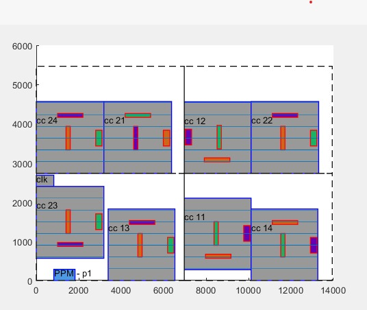

Ubuntu
Windows
CMake
C++
Visual Studio code
Eclipse
Mobexterm (ssh)
ssh -Y sadhikari@garfield.cs.mun.ca
sadhikari@garfield.cs.mun.ca's password:
sadhikari@garfield ~ $ cd WBTree/
sadhikari@garfield WBTree $ ls
'Answer th question.docx' apte.constraint fplan.cc sa.o
'Difference between B star and CB.png' apte.design fplan.h wbtree
'Last update.png' apte.info fplan.o wbtree.cc
Result_myside apte.res makefile wbtree.h
WBTree.pro cbtree.cc output.m wbtree.o
WBTree.pro.user cbtree.h sa.cc wbtree_main.cc
apte cbtree.o sa.h wbtree_main.o
sadhikari@garfield WBTree $ make all
sadhikari@garfield WBTree $ ./wbtree apte
normalize area=120117709, wire=1097347
Estimate Average Delta Cost = 0.000533333
Iteration 1, T= 1.00
135
==> Cost= 7238.665712, Area= 111.222160, Wire= 1178.141
==> Cost= 4547.929402, Area= 136.470200, Wire= 1190.651
==> Cost= 3788.945124, Area= 88.391296, Wire= 958.125
==> Cost= 3181.045805, Area= 57.074160, Wire= 837.443
==> Cost= 2876.308064, Area= 64.284928, Wire= 843.613
==> Cost= 104.062880, Area= 64.284928, Wire= 838.877
==> Cost= 104.062101, Area= 64.284928, Wire= 835.761
==> Cost= 104.061556, Area= 64.284928, Wire= 833.584
==> Cost= 104.061377, Area= 64.284928, Wire= 832.868
==> Cost= 104.053893, Area= 64.284928, Wire= 802.931
==> Cost= 104.053593, Area= 64.284928, Wire= 801.729
81.5261
T= 1.00, r= 1.00, reject= 0.90
Iteration 2, T= 1.00
135
78.0495
T= 1.00, r= 1.00, reject= 0.91
Iteration 3, T= 1.00
135
84.068
T= 1.00, r= 1.00, reject= 0.95
Iteration 4, T= 1.00
135
85.0882
T= 1.00, r= 1.00, reject= 0.93
Iteration 5, T= 1.00
135
==> Cost= 104.031030, Area= 60.719456, Wire= 788.052
==> Cost= 104.030729, Area= 60.719456, Wire= 786.850
86.4177
T= 1.00, r= 1.00, reject= 0.93
Iteration 6, T= 1.00
135
79.9629
T= 1.00, r= 1.00, reject= 0.95
Iteration 7, T= 1.00
135
==> Cost= 0.527934, Area= 60.719456, Wire= 807.670
95.6839
T= 0.80, r= 1.00, reject= 0.93
Iteration 8, T= 0.80
135
99.7802
T= 0.80, r= 1.00, reject= 0.93
Convergent!
good = 17, bad=3
recover last :
row:0, col:0
root : 6
6: 2 -1 8
2: -1 6 -1
8: -1 6 -1
row:0, col:1
root : 0
0: 3 -1 -1
3: -1 0 -1
row:1, col:0
root : 7
7: 4 -1 -1
4: -1 7 -1
row:1, col:1
root : 1
1: 5 -1 -1
5: -1 1 -1
Num of Module = 10
Wire Length = 807.67
Height = 4.564
Width = 13.304
Area = 60.7195
Out of bound Area = 0
Total Area = 46.5616
Total cost = 0.527934
MDD = 0
---- 0.12
Dead Space = 22.16
CPU time = 690.58
Last CPU time = 521.47

PROXIMITY // Start of the Proximity constraint.
cc_21 cc_24; // module1_name module2_name.
END_PROXIMITY // End of the Proximity constraint.
// Explaination : cc_21 and cc_24 must be placed neighbour.
BOUNDARY // Start of the Boundary constraint.
cc_14; // module_name.
END_BOUNDARY // End of the Proximity constraint.
// Explaination : cc_14 must be placed in the boundary of the window.
MINIMUM_SEPERATION // Start of the Minimum_Separation.
cc_13 200; // module_name minimum_separation_distance.
END_MINIMUM_SEPERATION // End of the Minimum_Separation.
// Explaination : cc_13 must be placed distanced as 300 from other modules.
FIXED_BOUNDARY // Start of the Fixed_Boundary
cc_23 1 1; // module_name rotate_flag(1:rotate, 0: not) flip_flag(1:flip, 0:not).
END_FIXED_BOUNDARY // End of the Fixed_boundary.
// Explaination : cc_23 must be placed on the boundary of the window with fixed rotation and flip.
SYMMETRY // Start of the Symmetry.
[cc_11,cc_12] HORIZONTAL 2416; // [mod1,mod2] means sequence_pair.
// HORIZONTAL/VERTICAL Axis.
clk VERTICAL 413; // mod means self symmetry. mod1 mod2 mod3.
// VERTICAL/HORIZONTAL Axis.
END_SYMMETRY // end of the Symmetry
// Explaination : symmetry pair, cc_11 and cc_12 must be placed
// symmetrically based on the horizontal axis 2416.
// Self_symmetry module, clk must be placed on the center of the vertical axis 413
PREPLACED // start of the Preplaced constraint.
p1 826 0 1826 286; // module_name left bottom right top.
END_PREPLACED // end of the Preplaced constraint
LAYOUT; // Means start of the Layout patterns information.
MODULE cc_11; // MODULE module_name.
PATTERNS; // Means the patterns information of the MODULE["cc_11"].
P_0 1000 1430 2200 1530; // Pattern_name left bottom right top.
P_1 1400 600 1600 1200; // Pattern_name left bottom right top.
P_2 2800 700 3100 1100; // Pattern_name left bottom right top.
END_PATTERNS; // End of the patterns information of the MODULE["cc_11"].
FIN 300 300; // FIN Dfin Dbot;
// Dfin: distance between the fin lines,
// Dbot: distance between the bottom of the module and the last fin line.
END_MODULE; // End of the MODULE["cc_11"].
MODULE cc_12; // MODULE module_name.
PATTERNS; // Means the patterns information of the MODULE["cc_12"].
P_0 1000 1430 2200 1530; // Pattern_name left bottom right top.
P_1 1400 600 1600 1200; // Pattern_name left bottom right top.
P_2 2800 700 3100 1100; // Pattern_name left bottom right top.
END_PATTERNS; // End of the patterns information of the MODULE["cc_12"].
FIN 300 300; // FIN Dfin Dbot;
// Dfin: distance between the fin lines,
// Dbot: distance between the bottom of the module and the last fin line.
END_MODULE; // End of the MODULE["cc_12"].
MODULE cc_13; // MODULE module_name.
PATTERNS; // Means the patterns information of the MODULE["cc_13"].
P_0 1000 1430 2200 1530; // Pattern_name left bottom right top.
P_1 1400 600 1600 1200; // Pattern_name left bottom right top.
P_2 2800 700 3100 1100; // Pattern_name left bottom right top.
END_PATTERNS; // End of the patterns information of the MODULE["cc_13"]
FIN 300 300; // FIN Dfin Dbot;
// Dfin: distance between the fin lines.
// Dbot: distance between the bottom of the module and the last fin line.
END_MODULE; // End of the MODULE["cc_13"].
MODULE cc_14; // MODULE module_name.
PATTERNS; // Means the patterns information of the MODULE["cc_14"].
P_0 1000 1430 2200 1530; // Pattern_name left bottom right top.
P_1 1400 600 1600 1200; // Pattern_name left bottom right top.
P_2 2800 700 3100 1100; // Pattern_name left bottom right top.
END_PATTERNS; // End of the patterns information of the MODULE["cc_14"].
FIN 300 300; // FIN Dfin Dbot.
// Dfin: distance between the fin lines.
// Dbot: distance between the bottom of the module and the last fin line.
END_MODULE; // End of the MODULE["cc_14"].
MODULE cc_21; // MODULE module_name.
PATTERNS; // Means the patterns information of the MODULE["cc_21"].
P_0 1000 1430 2200 1530; // Pattern_name left bottom right top.
P_1 1400 600 1600 1200; // Pattern_name left bottom right top.
P_2 2800 700 3100 1100; // Pattern_name left bottom right top.
END_PATTERNS; // End of the patterns information of the MODULE["cc_21"].
FIN 300 300; // FIN Dfin Dbot;
// Dfin: distance between the fin lines.
// Dbot: distance between the bottom of the module and the last fin line.
END_MODULE; // End of the MODULE["cc_21"].
MODULE cc_22; // MODULE module_name.
PATTERNS; // Means the patterns information of the MODULE["cc_22"].
P_0 1000 1430 2200 1530; // Pattern_name left bottom right top.
P_1 1400 600 1600 1200; // Pattern_name left bottom right top.
P_2 2800 700 3100 1100; // Pattern_name left bottom right top.
END_PATTERNS; // End of the patterns information of the MODULE["cc_22"].
FIN 300 300; // FIN Dfin Dbot.
// Dfin: distance between the fin lines.
// Dbot: distance between the bottom of the module and the last fin line.
END_MODULE; // End of the MODULE["cc_22"].
MODULE cc_23; // MODULE module_name.
PATTERNS; // Means the patterns information of the MODULE["cc_23"].
P_0 1000 1430 2200 1530; // Pattern_name left bottom right top.
P_1 1400 600 1600 1200; // Pattern_name left bottom right top.
P_2 2800 700 3100 1100; // Pattern_name left bottom right top.
END_PATTERNS; // End of the patterns information of the MODULE["cc_23"].
FIN 300 300 // FIN Dfin Dbot.
// Dfin: distance between the fin lines.
// Dbot: distance between the bottom of the module and the last fin line.
END_MODULE; // End of the MODULE["cc_23"].
MODULE cc_24; // MODULE module_name;
PATTERNS; // Means the patterns information of the MODULE["cc_24"].
P_0 1000 1430 2200 1530; // Pattern_name left bottom right top.
P_1 1400 600 1600 1200; // Pattern_name left bottom right top.
P_2 2800 700 3100 1100; // Pattern_name left bottom right top.
END_PATTERNS; // End of the patterns information of the MODULE["cc_24"].
FIN 300 300; // FIN Dfin Dbot.
// Dfin: distance between the fin lines.
// Dbot: distance between the bottom of the module and the last fin line.
END_MODULE; // End of the MODULE["cc_24"].
END_LAYOUT; // End of the Layout Patterns.
DESIGN_RULES; // Start of the Design Rules.
MINIMUM_DISTANCE 300; // MINMUM_DISTANCE value;
// Explaination : all same mask patterns should be placed
// distanced at least 300 or more.
// value: minimum distance that occurs mask conflict constraints
MASK_NUM 3; // MASK_NUM value.
// value: MASK numbers.
// Explaination : there will be 3 different masks.
WINDOW_SIZE 6972 2732; // WINDOW_SIZE width height; size of the window
// Explaination : Each window size will be 6972 x 2732.
BIN_SIZE 3500 1500; // BIN_SIZE width height; size of the bin
// Explaination : Each bin size will be 3500 x 1500.
MAXIMUM_DENSITY_DIFFERENCE 0.5; // MAXIMUM_DENSITY_DIFFERENCE value.
// value: maximum density difference values that
// satisfies the density balance constraint
// Explaination : In look_ahead_density_checking,
// each wbnode(window node) has mask density value,
// the maximum difference between them must be
// same or smaller than 0.5.
// In Global_mask_density_checking, we calculate the mask density
// in every window. And the maximum difference between them must
// be same or smaller than 0.5.
// In Local_mask_density_checking, we find the dense patterns,
// and create the Bin based on those patterns’ center point,
// calculate the mask density.
// And the maximum difference between those bins must
// be same or smaller than 0.5
ENDDESIGNRULES; // End of the design rules